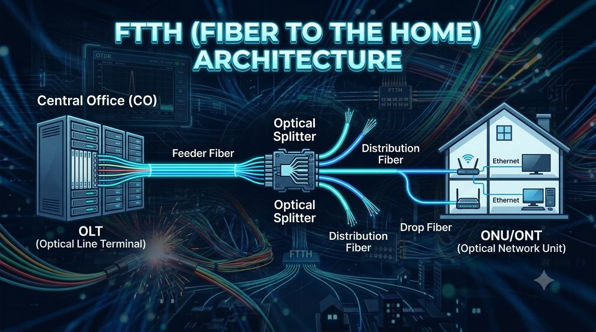

FTTH ဆိုတာဘာလဲ?

FTTH (Fiber To The Home - အိမ်အထိ Fiber ရောက်အောင် တပ်ဆင်ပေးတဲ့ Network) ဆိုတာ Internet Service Provider (ISP - Internet ဝန်ဆောင်မှုပေးသူ) ကနေ User ရဲ့အိမ်အထိ Optical Fiber (အလင်းဖြင့် Data ပို့ဆောင်တဲ့ Fiber) ကို အသုံးပြုပြီး Internet Service ပေးတဲ့ Access Network Technology တစ်ခု ဖြစ်ပါတယ်။
ရိုးရိုးရှင်းရှင်းပြောရရင်
ISP → Fiber Network → User Home
ဆိုတဲ့ လမ်းကြောင်းအတိုင်း
Internet Data ကို Fiber ကနေတစ်ဆင့်
အိမ်အထိ ပို့ပေးတာကို FTTH လို့ခေါ်ပါတယ်။
FTTH = Fiber To The Home
ISP ကနေ User အိမ်အထိ Optical Fiber နဲ့ Internet ပို့ပေးခြင်း ဖြစ်ပါတယ်။
FTTH ဘယ်လိုအလုပ်လုပ်သလဲ?
FTTH Network မှာ Internet Data က Internet Service Provider (ISP) ဘက်ကနေ စတင်ပြီး OLT (Optical Line Terminal) ဆီကို ရောက်လာပါတယ်။
OLT ကနေ Optical Fiber မှတစ်ဆင့် Data ကို User တွေဆီ ပို့ပေးပါတယ်။ Network အတွင်းမှာ Optical Splitter ကို အသုံးပြုပြီး Fiber တစ်ချောင်းကနေ User အများအပြားကို Service ပေးနိုင်ပါတယ်။
User ရဲ့အိမ်ကို ရောက်တဲ့အခါ ONT / ONU က Optical Signal ကို လက်ခံပြီး Router နဲ့ အခြား Network Devices တွေ အသုံးပြုနိုင်အောင် ပြောင်းပေးပါတယ်။
FTTH Network Basic Flow
1. OLT (Optical Line Terminal)
OLT က ISP ရဲ့ Central Office မှာ တပ်ဆင်ထားလေ့ရှိတဲ့ အဓိက Optical Equipment ဖြစ်ပါတယ်။
OLT က User တွေဆီ Data ပို့ပေးခြင်းနဲ့ User ဘက်ကနေ ပြန်လာတဲ့ Data ကို လက်ခံခြင်းတို့ကို စီမံပေးပါတယ်။
OLT = FTTH Network ရဲ့ အဓိက Equipment
2. Feeder Fiber
Feeder Fiber က OLT ဘက်ကနေ Splitter Area အထိ သွားတဲ့ Main Fiber ဖြစ်ပါတယ်။
3. Optical Splitter
Optical Splitter က Optical Signal ကို လမ်းကြောင်းများစွာ ခွဲပေးတဲ့ Passive Device ဖြစ်ပါတယ်။
ဥပမာ
1:8 Splitter
→ Output 8 လမ်း
1:16 Splitter
→ Output 16 လမ်း
1:32 Splitter
→ Output 32 လမ်း
1:64 Splitter
→ Output 64 လမ်း
Splitter က Passive Device ဖြစ်ပြီး ပုံမှန်အားဖြင့် Electrical Power မလိုအပ်ဘဲ Optical Signal ကို ခွဲဝေပေးနိုင်ပါတယ်။
4. Distribution Fiber
Distribution Fiber က Splitter မှ ခွဲထွက်လာတဲ့ Optical Signal ကို User တွေရှိတဲ့ Area ဆီ ပို့ပေးတဲ့ Fiber ဖြစ်ပါတယ်။
5. Drop Fiber
Drop Fiber က Distribution Point ကနေ User အိမ်အထိ ချိတ်ဆက်ပေးတဲ့ နောက်ဆုံးပိုင်း Fiber ဖြစ်ပါတယ်။
ဒီ Fiber က User ရဲ့ Home၊ Apartment ဒါမှမဟုတ် Office အထိ ရောက်အောင် တပ်ဆင်ပေးပါတယ်။
6. ONT / ONU
ONT (Optical Network Terminal) နဲ့ ONU (Optical Network Unit) တို့က User ဘက်မှာ Optical Signal ကို လက်ခံပြီး Network Devices တွေ အသုံးပြုနိုင်အောင် ပြောင်းပေးတဲ့ Equipment တွေ ဖြစ်ပါတယ်။
ONT / ONU ကနေ Ethernet Port ကို အသုံးပြုပြီး Router၊ Computer နဲ့ အခြား Network Devices တွေကို ချိတ်ဆက်နိုင်ပါတယ်။
FTTH မှာ Splitter ဘာကြောင့်သုံးတာလဲ?
Optical Splitter ကို အသုံးပြုခြင်းအားဖြင့် Fiber တစ်ချောင်းရဲ့ Optical Signal ကို User အများအပြားအတွက် ခွဲဝေပေးနိုင်ပါတယ်။
ဒီလို Network Design လုပ်နိုင်ပါတယ်။
GPON ဆိုတာဘာလဲ?
GPON (Gigabit Passive Optical Network) ကို FTTH Network တွေမှာ အသုံးများပါတယ်။
GPON မှာ OLT ၊ Optical Splitter နဲ့ ONT / ONU တို့ကို အဓိကအသုံးပြုပြီး User အများအပြားကို Fiber Network တစ်ခုတည်းကနေ Service ပေးနိုင်ပါတယ်။
FTTH ရဲ့ အားသာချက်များ
- High Speed
- High Bandwidth
- Long Distance
- Low Attenuation
- EMI Immunity
- Scalable Network
Beginner အတွက် သိထားသင့်တဲ့ Technical Terms
| Technical Term | အဓိပ္ပါယ် |
|---|---|
| OLT | FTTH Network ရဲ့ အဓိက Optical Equipment |
| ONT / ONU | User ဘက်က Optical Equipment |
| Optical Splitter | Optical Signal ကို ခွဲပေးတဲ့ Passive Device |
| Feeder Fiber | OLT ကနေ Splitter Area အထိ သွားတဲ့ Main Fiber |
| Distribution Fiber | Splitter ကနေ User Area အထိ ဖြန့်တဲ့ Fiber |
| Drop Fiber | User အိမ်အထိ ချိတ်ဆက်ပေးတဲ့ Fiber |
| ODN | OLT နဲ့ ONT ကြားက Optical Distribution Network |
| GPON | Gigabit Passive Optical Network |
| Optical Power | Optical Signal ရဲ့ Power |
FTTH ကို စလေ့လာတဲ့အခါ ဒီ Basic Flow ကို အရင်ဆုံး မှတ်ထားပါ။
OLT → Feeder Fiber → Splitter → Distribution Fiber → Drop Fiber → ONT / ONU → Router
Quick Summary
FTTH (Fiber To The Home) ဆိုတာ Internet Service ကို Optical Fiber အသုံးပြုပြီး User ရဲ့အိမ်အထိ ပို့ပေးတဲ့ Access Network Technology ဖြစ်ပါတယ်။
FTTH Network ရဲ့ အခြေခံ Component တွေက OLT၊ Optical Splitter၊ Fiber နဲ့ ONT/ONU တို့ ဖြစ်ပါတယ်။
FTTH ရဲ့ အဓိကအားသာချက်တွေက High Speed၊ High Bandwidth၊ Low Attenuation နဲ့ Long Distance Transmission ဖြစ်ပါတယ်။